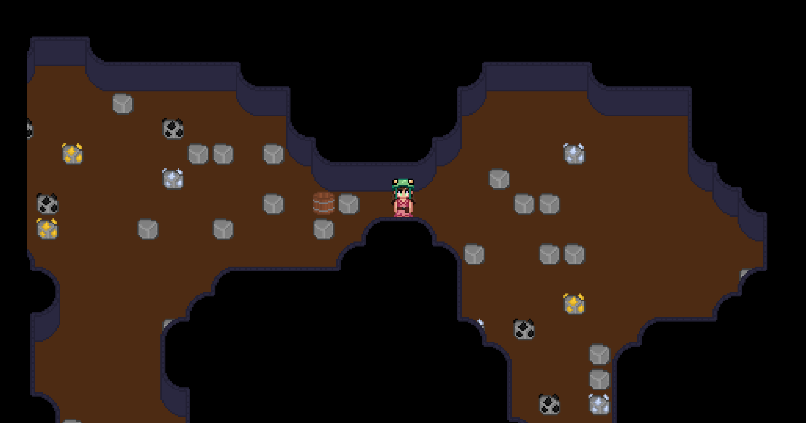
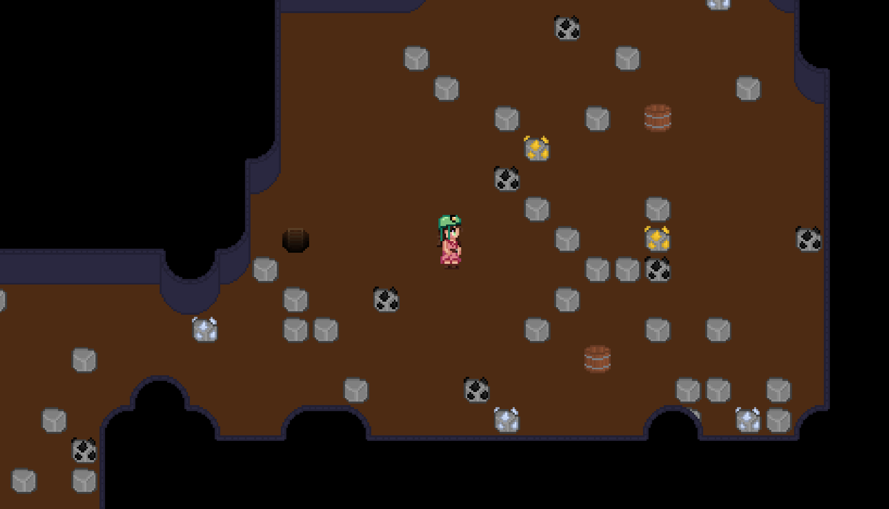

The goal of this specialisation project was to deepen my understanding of procedural generation. In this case, researching and implementing a binary space partitioning algorithm (BSP).
To make procedurally generated caves, I decided that implementing a BSP algorithm would be a good option.
Mostly because it's a tried and tested method for this exact use case, but also because of the resources available on the topic.
Since I was making this into something resembling a tool, I tried to make it as modular as possible.
Exposing variables to allow for changes in map size and partition size.
Building on top of the BSP algorithm, I use even more exposed variables to decide where rooms should be. The rooms describe a square inside each leaf node of the BSP tree. These rooms are then connected together with bridges by ascending the BSP tree, connecting each node pair together.
The next issue I encountered was that results from the room generation are very square, and not at all like organic caves.
To fix this, I decided on using a tenchnique called cellular automata.
This basically meant generating a bunch of random noise around the rooms and then smoothing it out to create more organic and flowing cave layouts.
After making shapes of the rooms pretty, it was time to make them look the part too.
To do this, I made an auto tiling system which works by looking at a tiles neighbors, checking if theyre a wall or a floor, and then using that data to determine which tile piece is supposed to be placed where.
Finally, to make the caves feel more visually appealing, I made a system that randomly generates content to fill out the environment with. This works by having a table of content that can be picked for each tile, each with a chance of being picked. The system then goes through every floor tile, picking items at random to fill out the space.
